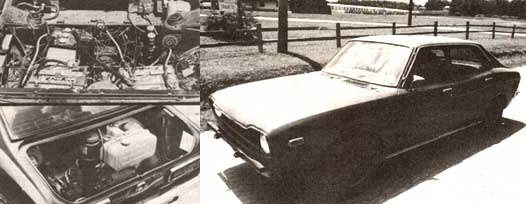

In response to the many requests we've received for additional experimental auto information, here's...
A little over a year ago we published an article (written by contributor Robert Marshall) that described an experimental hybrid electric automobile designed and built by an Arkansas electrical engineer named David Arthurs (see MOTHER NO. 58, page 160). In that piece, it was reported that Arthurs' vehicle (which used an on-board internal-combustion generator engine to provide "juice" to a battery bank, which-in turn-fed the car's electric drive motor) could not only travel 75 miles on a gallon of fuel, but had been converted to hybrid electric mode using just $1,500 worth of (mostly) government surplus parts!
We also, at that time, made arrangements with Mr. Arthurs to produce under his careful eye-and to offer through the magazine-a set of plans detailing the procedures and parts used by the engineer in his automotive conversion.
As a result of David's continued testing, suggestions from readers, and our own research . . . we soon discovered that the original magazine article was general enough to allow for some misconception. Furthermore, David pointed out-before we began work on the plans-that there were several technical errors in the original interviews.
Considering these facts (and always bearing in mind that Dave's car was truly experimental, and that it was constantly undergoing design changes aimed at making it better), we all went out of our way to detail the jointly prepared plans that followed the original article . . . so that anyone attempting to build a hybrid vehicle could follow those instructions to determine-right from the start-exactly what components would be necessary for the car's successful operation, and could then "custom fit" the design (according to the plans) to suit his or her particular vehicle, terrain, and range requirements.
However, a few folks (some of whom hadn't purchased plans and others who had and were seeking extra assistance) were still hungry for more hybrid data . . . and continued to call MOTHER and David, looking for tips. Now Mr. Arthurs has a full-time electronics business to tend to, and he simply wasn't able to conduct his regular research program, keep his business going, and answer the technical questions that came in.
So we here at MOTHER decided to build our own version of the Arkansan's prototype-using the plans we had prepared with David's help to do so-in order to be able to answer, from the authority of firsthand experience, the many hybrid-related queries that came up.
MOTHER BUILDS HER OWN
For a good many months now, MOM's researchers have been conducting exhaustive tests-and compiling valuable data-on several different hybrid car versions . . . finally settling on a vehicle based upon a 1973 Subaru sedan for our "test unit". And despite the extremely mountainous terrain typical of our western North Carolina home (hills and hotrodding, as was explained in the original article and in the plans, can drastically reduce the effectiveness of a hybrid's charging and propulsion system), the vehicle performs well. In fact, we're so pleased with the car that we decided to report exactly what our hybrid has accomplished so far, and how we were able to make it achieve such results!
As you read the following figures, keep in mind that our economy and performance tests were all done under actual road conditions . . . unfavorable though those conditions often were. At no time did we estimate or extrapolate range or mileage, or otherwise simulate any kind of driving condition. In short, we stuck to a straightforward, in-use analysis that was even more realistic than that used in the government's EPA mileage tests!
Probably the first two questions anyone would want to ask about the experimental hybrid's performance relate to its fuel economy and range. Such considerations are, of course, directly influenced by [1] the choice of engine used to turn the charging generator, [2] the total weight of the car, and [3] the terrain and driving conditions the auto encounters. As explained in the plans package, the lighter the original vehicle, the more effective the hybrid electric (a term which, of course, refers to the fact that the batteries and the liquid-fueled engine work in combination) will be. Because of that fact, the plans suggest that anyone intending to build a hybrid first select the lightest chassis available . . . then go ahead and set it up as a strictly electric vehicle, and make test runs to determine current draws for that car. Armed with such relevant information, a builder would then be equipped to make the best possible choice of engines ... based upon horsepower, torque, and fuel consumption at a given RPM.
In our case, the Subaru had a total weight-with batteries and 200 amp generating system on board-of approximately 3,000 pounds. Because of our area's terrain (which, as noted above, increases amperage draws considerably over what they might be during operation in a more level area), we found it necessary to add, as per the plans, six extra six-volt batteries . . . to provide additional storage capability. Our prescribed "electric only" testing then determined that we needed-again because of the steep up-and-down grades of most of our roads-an engine with a continuous rating (DIN) horsepower of about 9. For insurance, we finally settled on a plans-recommended 12.5 (DIN) horsepower Lombardini 720 diesel . . . and then set the impressive little powerplant to run at midrange, at which point it produced approximately the 9 horsepower our auto required.
(Although David Arthurs' original 5-horsepower gasoline engine certainly did add to the range of his battery pack-and thus effectively "hybridize" his vehicle-over the comparatively flat Arkansas roads . . . such an engine would not have extended our hybrid's range enough beyond that of the batteries alone to justify its use.)
Further testing enabled us to decide upon another "best choice" . . . this in the area of motor controls. Our experience with the "chopper" used by Dave on his prototype Opel hybrid indicated that the system might have a limited lifetime as a result of the sometimes extreme currents that passed through its brushes while in operation. So we read through the alternatives presented in the plans and-rather than fall back on a cost-prohibitive Silicon Controlled Rectifier (SCR) control-chose to utilize a voltage tap system to the field, rather than to the armature, to regulate the main motor's starting torque while still keeping the current passing through the control down to a comfortable 10 amps or so.
By doing this, not only have we in stalled an inexpensive, so-far-effective regulating device (our system provides a progressive "stepping down" of field voltage from 30 to 18 to 6, governed by microswitches and operated by depressing the accelerator pedal), but we've also eliminated the need for all the car's high-amperage, high-cost relays . . . except the 400-amp main motor relay! (Our research now indicates that a two-step setup-30/24-volt-may be more practical and would provide more economy.)
As another point of interest-especially for the convenience-minded-we found that, although it's quite possible to operate the hybrid without a clutch (as we did over the course of many hours of testing), the car's drivability is increased by installing one of the mechanical uncoupling devices. A clutch probably extends the life of the transmission gears and synchronizers, and also allows the removal of a reactor from the wiring circuit . . . a component which is nothing more than an electrical "shock absorber" used to control high voltage surges when no clutch is employed.
Here's an unexpected bonus that resulted from our hybrid car research!
Mother's 129-MPG Car!
Between testing and improving the various hybrid electric car models, MOTHER's researchers have-as you can imagine-had plenty to keep them occupied over the past months. But they weren't too busy to devote time to another project that's something of a "horse of a different color": the design and construction-from the ground up-of a two-passenger, ultra-high-mileage diesel automobile.
If there's one thing we've learned from working with the hybrid car, it's that reduced weight is a key factor in achieving increased fuel economy. Our goal, then, was to build a machine which weighed no more than 900 pounds ... and we ended up doing even better than we'd hoped!
Motive power for our lightweight creation comes from a one-cyciinder, 6.4 (DIN continuous rating) horsepower Lombardini diesel engine, driven through a set of Salisbury clutches that allow for an infinitely variable gear ratio, governed by load. Final drive is at a fuel-saving 2.82-to-1 ratio, using a chain and sprocket system connected to the axle of the right rear wheel.
MOTHER's roadster, in its present configuration, weighs in at just about 675 pounds . . . a figure we never imagined-several months ago-we'd be able to achieve. However, surprised as we were at the lightness of the machine, the real shock was the car's mileage: At this point, with the engine still as yet not broken in, we're getting as high as 129 miles per gallon in actual suburban driving . . . and we hope to improve that figure-and the vehicle's approximately 45-MPH top speed-as time goes on.
Right now, though, we're working on body design, and-although the increased weight of a "shell" will add a few unwanted pounds-its wind-cutting configuration (not to mention the convenience and comfort it will provide to the driver and passenger) should completely offset any such disadvantages. We'll keep you posted on the developments of this project as they occur . . . in'the meantime, maybe we'll do some economy testing using vegetable oil as fuel!
THE PROOF IS IN THE TESTING
Once our Subaru was set up as described . . . and we had installed our final engine choice, which was still "tight" with only three hours on it ( the break-in time is from 30 to 50 hours), we achieved more than satisfying "mountain driving" results. With a fully charged battery pack and carrying 300 pounds of driver and passenger (anal running with open windows, stock tires, and various other "handicaps" not usually associated with high-mileage tests), the fuel economy over the course of our 78-mile test run (with help from the battery pack) worked out to 83.6 miles per gallon. of diesel fuel. The car's top cruising speed on level ground-in its 30-volt configuration-proved to be about 45 MPH . . . although we did hit 55 MPH on a slight downhill stretch.
With the driver controlling the speed of the diesel generator engine, and trying to keep current draws below 200 amps whenever possible by shifting gears (and using the accelerator to vary field voltage) when necessary, the diesel engine-doing its "hybrid job"-more than doubled the range that would have been possible with the batteries alone! (And, of course, when the two separate "fuel systems" worked together, we achieved our best economy figures.)
Furthermore, even with the battery pack fully drained and disconnected, we found it possible to motor along at a speed of 45 miles per hour on the generator engine alone. Under engine-only operation, we were still able to achieve 60.5 MPG . . . a figure which could increase by as much as 20% after the Lombardini breaks in.
What all these numbers boil down to is this: When the car is operated in the hybrid mode (using both batteries and engine as it was designed to do), it's possible to achieve astounding fuel economy over a more than reasonable commuting distance. Any driving done beyond the 78-mile hybrid range would-in our vehicle under our test conditions-be at the expense of such excellent MPG figures . . . though the numbers wouldn't ever drop to quite as "low" as the 60 (plus) MPG possible using the generator engine alone. And, of course, as long as there's fuel in the on-board diesel, the car's total range is unlimited.
BUT THERE ARESOME LIMITATIONS
The figures achieved during our testing vary from those that Robert Marshall reported were "racked up" by David Arthurs' original hybrid some months ago. Several of the discrepancies can likely be attributed to the differences in vehicles and propulsion system configurations, and others to the inequality of terrain involved. But there were several points made in that article that were inaccurate (as folks who ordered the plans, in which the errors were corrected, already know), owing to the fact that David's vehicle was then experimental and still under initial-and at times necessarily somewhat crude-testing.
For one thing, it was reported in the original piece that Mr. Arthurs' drive motor had current draws of 23 amps at 1,800 RPM. In reality, the motors that we bench-tested at 30 volts had free-running draws of about 40 amps at 4,800 RPM . . . which-under load on the highway at 30 volts-increased to 100-150 amps on level ground at 30 miles per hour, with the car in third gear.
Another point that needs some clarification is the statement, made in the article, that Arthurs' engine-driven generator could handle the demand from the main motor at speeds of up to 50 MPH, after which the energy in the batteries came into play. Our testing so far indicates that the generator, without the "hybrid" boost provided by the storage pack, is capable of propelling the car at around only 45 MPH and-at that velocity-doesn't produce enough surplus to significantly charge the battery bank.
Which brings us to another point concerning performance of the vehicle: Dave's original car was set up to use a 24/48-volt system (an option emphasized in the plans) . . . in other words, the auto could be switched to the higher voltage to achieve greater speeds for passing and such. Making a switch to "48", however, increases amperage draws drastically (causing a corresponding reduction in the vehicle's range), and-since the batteries can't be charged at 48 volts-continuous travel at such speeds would be impossible. (Furthermore, though it was reported that Dave's speedometer registered 90 MPH on a gradual downhill grade, we feel that the drive motor would have had to be fed yet more voltage-at least on level ground-to achieve such an admittedly excessive speed.)
The capability-mentioned in the original article-of using the on-board generator to charge the stationary vehicle in a short time, is another matter that deserves attention. According to Dave's gauges, his original hybrid Opel's batteries could be brought from 1/4 strength to a full charge in 15 minutes. This has proven to be a misleading reading, however. The meters were, we have found, actually indicating only a full surface charge (which wouldn't be able to power the car for long). In reality, the best way to renew the battery pack is by "trickle charging" . . . feeding the current at a rate of about 25 amps over a period of approximately 10 hours.
DOLLARS AND cents
The cost figures for the project, as David Arthurs itemized them, were absolutely accurate. However, the prices reflect costs as they stood more than two years ago, and inflation has since then taken its toll. What's more, the law of supply and demand-especially in the case of some of the limited-availability government surplus parts-has driven the cost of certain components (such as the 400-amp starter generator) up to triple what it was back then!
Fortunately, with a straight "one-voltage" system-as used by MOTHER's car-some of the high-amperage relays can be eliminated and much money saved. However, anyone starting to build a hybrid today should know that the possible need for more batteries and/or a larger engine (such as our fuel-economical diesel), coupled with future changes in price and availability of government surplus components, could add a good bit to the cost of the total project. (It would probably now be a good idea to check with surplus suppliers to determine the size of their parts inventories before embarking on the project.)
MOTHER's researchers intend to finish testing our hybrid car-and to monitor the continuing research conducted by David Arthurs-and we'll report any breakthroughs as they occur. We're also interested in a related project: By replacing the generating assembly with batteries, we hope to achieve an "electric" range of 60 miles, without the noise and pollution that are unavoidable when using any internal combustion engine!
Considering that the cost of "plug-in" energy for the hybrid car is under 2.5 cents per mile (based upon our area's rate of approximately 4 cents per kilowatt-hour), such a vehicle should prove very attractive . . . especially in light of the fact that the average American car consumes fuel at a rate of more than 6 cents per mile!
And more news for our fellow experimental car enthusiasts: The DOE recently awarded General Electric an $8 million contract to develop two hybrid prototypes that-it's hoped-will use a "whopping" 5% less total energy than today's Detroit products. With that kind of money, it shouldn't be long before Big Industry reaches the point where Dave Arthurs was two years ago!
EDITOR'S NOTE: Those who'd like to use their already purchased plans to build MOTHER's experimental version of the hybrid car can get free update information by sending a stamped, self-addressed envelope to Mother's Plans, Hybrid Car Update, P.O. Box A, East Flat Rock, North Carolina 28726.
And if you haven't yet bought the plans, you can order a set-containing information on all the hybrid options mentioned in this article-for $15, from, Mother's Plans, Hybrid Car, P.O. Box A, East Flat Rock, North Carolina 28786.
|
 FAR ABOVE, LEFT: The Subaru's ""engine room"" now accommodates the main drive motor, several batteries, and various system controls. ABOVE, LEFT: The engine and generator fit comfortably in the trunk. ABOVE, RIGHT: MOM's hybrid hits the road! |
|
|